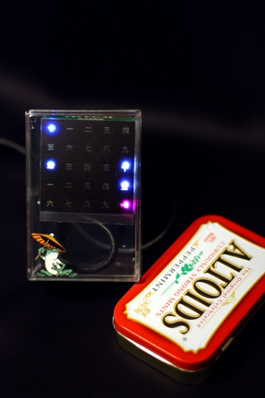
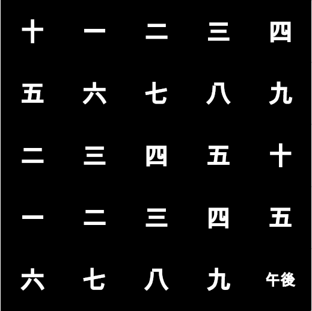

Summary
The origin of an idea, jibberjabber and don't do it 3 times
|  |
| The Japanese v1 version. Much more samples at the bottom! |
Then I thought a bit further: often a nice project to starting tinkerers is to make some clock : not basic yet not over complex, a nice present, it has a visual side (Hey mum, look what I did!) and it is useful... In other words one could say that the clocks are the holly graal of beginner tinkerers (and I'm counting myself in this group). Having myself made already a few clocks (ardReveil, ardReveil v2, ardReveil v3, ...) I kind of have a good idea of the pros anc cons of doing it this way or that way.
What is the purpose of making the clock? Soldering a SMD RTC component on a separately bought pcb with a ad'hoc trace, then make a spaghetti plate of wires to reach the micro controller ? If it's an interresting experience to do once, it is a burden to those who did it many times and all those who don't care. Why? Because their goal is not to bother with the time keeping part (the common part between all those clock, a task that is redundant) but to make their clock glow in the dark, keep track of ISS, drive a VFD, make some 8bit music, show time in binary or klingon, ... whatever makes them thrill and their idea unique!
So, let's apply the principle of "never do things thrice manually" : eg in my job, my boss asks me an export of data, I make it manually. He comes again one month later ? I make a script to do it and store it somewhere. He comes again a few month later? I make a nice report, with parameters, automatized that he can do it by himself and never bother me again. Applied to the current case, let's make a 2 part solution:
- The main board : a board, an Arduino clone minus the USB, that can have a RTC (if possible 2 different types, choose your weapon), embeds a voltage regulator and that could drive without any external component the led board in its basic format and be extended a minimum at least.
- The led board : a 5x5 leds board that can be used as is or chained with others (vertically, horizontally) to make more detailed boards
- You just want to make a clock ? ok, use the "main board" : you already have an arduino clone and a pad for your RTC. All the pins are accessible so plug the free ones to drive your <fill in the blank with something cool> !
- You want to make a WordClock 5x5 ? Use the main and the led board, put one on top of the other: tada !
- You want to make a Binary clock ? Use the main and the led board, put one on top of the other: tada ! Just pick different led colors and change how you display the time in the in-memory table. Leave the microcode do the drawing, it knows how to.
- You want to make a 5x10 clock that shows on the left the dates on the right the time ? Solder 2 led boards together and use the main board
- ... and so on, limit is your imagination
If you want some of those PCB, please contact me by mail for I have quite few spares (you have to order by 10), so I'm sure we can find a way to make us both happy. Otherwise feel free to do your own : the source codes for eagle and the arduino code, everything is in that page and free to reuse (a little credit and a hint to your page are however much appreciated).
| Windmill version |
| Low voltage Nixie tube version ardReveil v5 Tubed |
Credits and thanks
- The first inspiration (thanks for sharing) :
- The exact stuff I wanted to do ... I have to change my project from unique to rare ... I hate that guy...
Schema
Led board
Instead of soldering x leds, in a fixed pattern just for this project, I used the Seeedstudio service I became fan to make the following : a small board 5x5 that you can attache to sister cards. Basically it's just a grid of line x column of %20 and - with leds at the intersection. Just it will make the soldering easy, there's at max 25 leds (put only the ones you want!) and provision for resistor (you have to solder-bridge the pads to make contact otherwise circuit is opened).
Eagle files on google code SVN.
Controller board
| Main board v1.0 (Jan2012) |
Eagle files on google code SVN.
On the board :
- Atmega 328 (or compatible)
- ISP pins
- Crystal and its pair of caps
- Footprint for DS3231 and DS3234
- CR2320 button battery connector
- LM7805 voltage regulator
- Pinout compatible with led board with solderpad to enable
- This means if you solder the solderpads, you can drive the leds directly through the atmega pins (5x5 pins) without any other wiring nor shift register. I should add a schema to make it clear ... 'cause it's a really good idea I think!
- Arduino's pins 0-4 (PD0-PD4) control the rows A-E, Arduino's pins 9-5 (PB1-PB0,PD7-PD5) control the rows 1-5. And yes columns are in reverse order, no there's no specific design idea under this state of fact.
Instructions for v1.0
See the captain's log for details but main facts are:- Works only with DS3234
- You must solder the wire to /CS to pin 10, and on the solder pad link it to ground
- You must add a battery CR2032 otherwise it won't work
- Cap C3 is not necessary if you don't use voltage regulator
 |
| Main board v1.1 (Feb2012) |
Instructions for v1.1
- Works with DS3231 (corrected footprint)
- Bug with DS3234 : the pin 19 must NOT be soldered to the pad (it will ground it), but air-wired to pin 18 of the MCU (PB4 MISO)
- You must add a battery CR2032 otherwise it won't work
- Cap C3 is not necessary if you don't use voltage regulator
Instructions for v1.2
- Works with DS3231 and DS3234 this time (!)
Code and instructions
The source
The target toolchain is Arduino 1.0 IDE with the integrated (and blessed) function to upload with a programmer (Ctrl%20Shift%20U). So the file extension is .ino and imported .h files changed (hello Arduino.h).As usual, everything is on Google code : http://code.google.com/p/alanarduinotools/source/browse/#svn%2Ftrunk%2FWordclock
You have the latest version, including the library for DS3234 (I reused Sparfun's one, they did the hard part of the job)
Update 20141125: long time I wanted to do it, now it's a reality: I rewrote the code in a real IDE, ATmel Studio 6. Bye bye ugly Arduino IDE! I have to rewrite/adapt some libraries, so it's done step by step, but now I already ported a big part of the code. I used the occasion to fix a few things I didn't like in the original Arduino version, more logical architecture, cleaner. Have a look!
https://code.google.com/p/alanarduinotools/source/browse/#svn%2Ftrunk%2FAtmegaxx8%2FMultiClockManager
Set the fuses
We're using a atmega328 in same config as an arduino, sot set the fuses to use the 16 MHz crystal. Note that since we don't need ultra precision you could use this pcb without the crystal but the SPI commmunication might require it. Never tried, it could work maybe with a few tweaks.Still always get an error when running that command but it's working anyway.
avrdude -v -v -p m328p -c avrispv2 -P COM1 -U lfuse:w:0xf7:m -U hfuse:w:0xd9:m -U efuse:w:0xff:m
Upload the binary
I use the pololu programmer and Arduino 1.0 IDE so it's integrated. Just had to explain it how to use the pololu programmer. Edit the D:\arduino-1.0\hardware\arduino\programmers.txt file and add the following lines. Trick is then in the Serial port menu to choose the port where your programmer is plugged and enjoy the power of Ctrl%20Shift%20U.avrispv2.name=Pololu AVRISPv2 clone avrispv2.communication=serial avrispv2.protocol=avrispv2
Display idea bank
|  |
||
| The original mask |
The japanese v1 言時計 mask |
十一(時)三十九(分)午後 //means 11:39 PM |
Pictures
As Frrrrrranky would say, this pcb is suuuuuuuuupeeeeeer cool
| The Japanese v1 '言時計' front with a Altoid for the size comparison. Board is 5x5 cm. In blue the hours, in white the minutes, pink is the "afternoon flag". Picture time was 十(時)二十五(分)午後 means 10:25 PM (hard to read on the picture took in low light) |
The Japanese v1 view by the side. No comment about the ugly buttons poorly hotglued to the back, thanks. This time I forethought and hid them behind. |
Links
- Another rendition of the Wordclock, with 5 minutes approx, led driver for continuous display plus nice surprises : a attiny2313 at the heart and the whole program in assembler (an art being lost). Respect sirs! http://dev.frozeneskimo.com/embedded_projects/word_clock
Captain's log
Led board
20111223: Just sent it to production in China for a small serie. The schema is available on google code SVN.20120110: got it, soldered it, tested it : works just fine (but it was an easy one). Next one : the main board (sent to HK tonight!)
20120307: let's make a new version with SMD leds instead!
Main board
20120110: To be honnest, it's the most difficult board I made (it's my 4th), took me 1 day and a half of work to wire the whole mess. If this works from start, I'll be king for the day (^。^) Let's cross finger, it's now in the good care of Seeedstudio. The schema is available on google code SVN.20120131: Received from Seeedstudio, delay was longer than usual but the 1 week of Chinese new year explains much. To be tested tonight...
20120131 later that night: ok, card is working just fine ! I have my time displayed on a 5x5, the prototype is just working so fine, passed the few first glitches I was a happy geek. However, Main Board v1.0 has flaws that will be fixed in v1.1:
- DS3231 : (Major) I picked the wrong package, the trace is way too small, impossible to solder... I feel like an idiot... no wait, I made provision to use also a DS3234 : it works ! I feel like a genius again. Anyway, let's fix that trace since DS3231 is easily encountered chip (or DS3232?)
- /CS pin : (minor) for the DS3234 the /CS pin could be (via a solder pad) connected to one Atmega pin or to gnd. I misread the doc, it can't be always connected to ground, the change of state is meaningful.
- Led board connection pins : (minor) slight mistake in placement, they are not exactly at the right place. I would say that the right one (labelled "east") is ～1mm too high. Although I thought I checked it, seems I anyway made the mistake. It's ok since you can connected it anyway, it's just not nice, it appears to be just a little screwed. Let's fix this next time.
- RTC connections : (nice to have) seems on some schema people add pull down or caps to the RTC component. It's not mandatory, not even on the constructor datasheet, but could be a plus or at least save some space for it.
20120206: Tested the japanese version I made yesterday the full day, a good habbit that made me discover a big bug in the display. Fixed this evening with a new firmware, put the stuff in a box (221 JPY at TokyuHands), complained about my lack of provision for fixing holes on the board, put a recycled usb cable for the 5v (it's meant to sit next to my pc at work), sticked the stickers (2 layers) et voila ! The Japanese v1 board (I live in Japan, I'm French, wife's Korean, ... long story). I'll call it 言時計, reads kotodokei or gendokei (1st reading prefered) and means yeah....workclock. Yeah I know the sticker is a bit tilted, not centered and the frog looked better in my imagination ... will do better next time, but still I'm happy. Now move on to next phases : test with Atmega88, voltage regulation and a 10x5 display with a SIPO, last preparation step before the 10x10 for the korean version.
Edit: after tests with Atmega88 it's ... not working (!) I think it's my chip that was fried, it requires another test but that was a bad surprise.
20120207: sent the main board v1.1 for production in HK. Main changes are all the bugfixes listed here above of v1.0 (wrong landing print for DS3231, unnecessary 2 way solder pad for /CS of DS3234. lack of mounting holes, misaligned pins, etc..). So basically the same except that easier to use for DS3234 and should be DS3231 compatible. Also the general wiring was reviewed and some unnecessary wires removed. Let's cross fingers and wait 2 weeks... Ah btw my Japanese v1 version is so cool on my desk.
20120224: at last, v1.1 arrived ! The delay for reception from Seeedstudio is somewhat irregular... but they still have the best ratio price/quality/quantity. Waiting for tonight to populate it with the La France that I finished soldering yesterday (around 50 through 3mm leds soldered by hand with luv)!
20120228: v1.1 working just fine with a DS3231! The La France is soldered and programmed, works just fine. Will sit on my desk a few days for the test, it will give me a little time to find a nice enclosure...